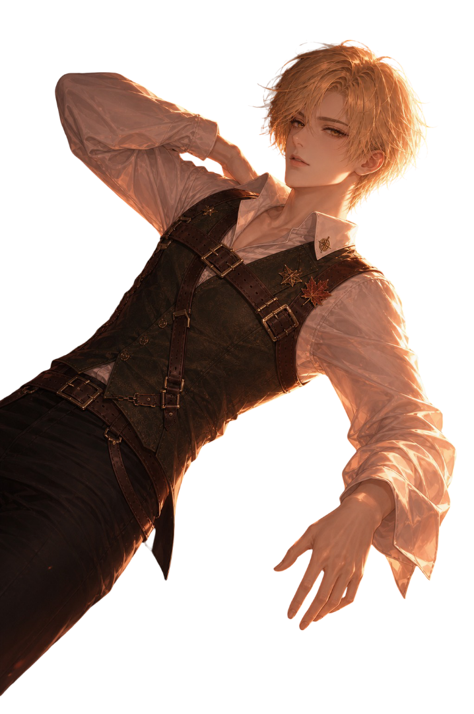
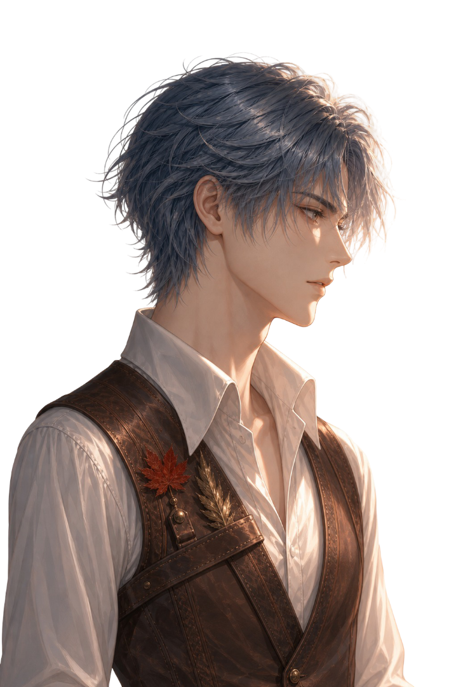
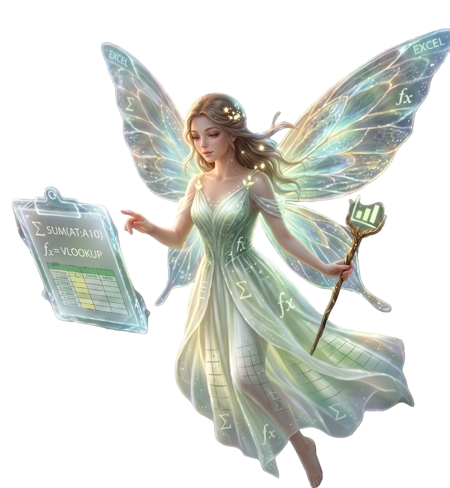

START GAME
Press the 繼續


V2 終極版
START GAME
Press the 繼續

不同裝置將提供最適合的操控介面。
之後可在 ⚙ 設定中隨時切換。
以關卡所面臨的實戰難題為導向，尋找對應的試算表解決技能。
親愛的 冒險者：
鑑於您在「公會物資名冊」展現出的卓越數據禁術，王城典儀廳現誠摯邀請您前往參與「皇家國庫清算行動」。
這是一項關乎王國基業的神聖任務，請務必於明晨準時抵達王城北大門。
── 王城典儀廳 首席大書記官
| 欄位 | 排序對象 | 順序 |
|---|
提示：在右側輸入「重症」、「中症」、「輕症」（每行一個），然後點擊新增。
輸入自訂的格式代碼，利用現有的代碼作為起點。